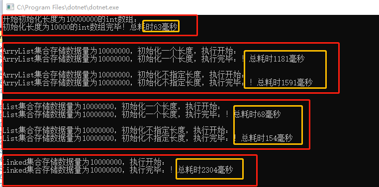

一、前言：
在c#数据结构中，集合的应用非常广泛，无论是做BS架构还是CS架构开发，都离不开集合的使用，比如我们常见的集合包括：Array、ArrayList、List、LinkedList等。这一些数据集合，在功能上都能够实现集合的存取，但是他们内部有什么区别，在使用时需要注意一些什么呢？下面根据个人的经验，对这一些集合数据的使用做一个简单的小结，如果说的不对的地方，欢迎指出，多多交流改进。
二、Array集合简介
Array集合，也就是数组，是最简单的数据结构，其存储的数据在内存空间是连续的，数组有一下一些特点
优缺点：
优点：
1、可以根据索引直接访问，访问速度快
2、数据是安全的，由于数据类型一致性，在存储使用过程中不涉及
缺点：
1、由于数据是连续存储的，导致插入效率变慢
2、由于数组长度大小固定，那么对预期非固定长度的数字不好处理
练习实例代码：
/// <summary>
/// 数组练习操作
/// </summary>
public class ArrayTest
{
/// 数组 Array 对于大家来说一点都不陌生
/// 数组是在内存连续分配的存储空间，这也导致数组有一下一些特点
/// 1.数据存储是连续的
/// 2.数组长度在定义时就必须制定
/// 3.数组存储的数据类型都是同一类型
/// 4.数组可以直接通过小标访问
///
/// 优缺点：
/// 优点：
/// 1、可以根据索引直接访问，访问速度快
/// 2、数据是安全的，由于数据类型一致性，在存储使用过程中不涉及到装箱拆箱操作
/// 缺点：
/// 1、由于数据是连续存储的，导致插入效率变慢
/// 2、由于数组长度大小固定，那么对预期非固定长度的数字不好处理
/// int类型的数组操作
public static void IntArrayTest()
{
//// 定义一个秒表，执行获取执行时间
Stopwatch st = new Stopwatch();//实例化类
st.Start();//开始计时
Console.WriteLine("开始初始化长度为10000000的int数组：");
//// 定义一个数组
int[] nums = new int[10000000];
for (int i = 0; i < 10000000; i++)
{
nums[i] = 1 + 1;
}
//需要统计时间的代码段
st.Stop();//终止计时
Console.WriteLine(string.Format("初始化长度为10000的int数组完毕！总耗时{0}毫秒", st.ElapsedMilliseconds.ToString()));
}
}
三、ArrayList集合简介
ArrayList 是Array的升级版，能够解决Array的一些缺点
ArrayList其内部实现也是Array，只是其长度是可以动态，在其内部用一个变量记录控制长度，ArrayList有如下一些特点
优缺点：
优点：
1、长度不固定，在定义是不必担长度溢出
2、可以存储任意数据类型
3、可根据索引查询，查询效率快
缺点：
1、由于长度不固定，执行效率低下，因为超出默认长度（10）后，会自动扩容拷贝数据，牺牲性能
2、由于存储类型是object,所以在存数据时会有装箱操作，在取数据时会有拆箱操作，影响效率
3、线程不安全，因为其内部实现是用size、array来共同控制，在新增操作时是非原子操作，所以非安全线程
使用技巧：
在实际使用过程中，为了避免自动扩容，可以预估数据长度，初始化一个数据长度，从而提高效率
练习实例代码：
/// <summary>
/// ArrayList数组练习操作
/// </summary>
public class ArrayListTest
{
/// ArrayList 是Array的升级版，能够解决Array的一些缺点
/// ArrayList其内部实现也是Array，只是其长度是可以动态，在其内部用一个变量记录控制长度，ArrayList有如下一些特点
/// 1.长度不固定
/// 2.可以存储不同的数据类型(object)
/// 3.同样支持索引查询（可以直接通过小标访问）
/// 4.灵活性更强，以牺牲性能为代价
/// 优缺点：
/// 优点：
/// 1、长度不固定，在定义是不必担长度溢出
/// 2、可以存储任意数据类型
/// 3、可根据索引查询，查询效率快
/// 缺点：
/// 1、由于长度不固定，执行效率低下，因为超出默认长度（10）后，会自动扩容拷贝数据，牺牲性能
/// 2、由于存储类型是object,所以在存数据时会有装箱操作，在取数据时会有拆箱操作，影响效率
/// 3、线程不安全，因为其内部实现是用size、array来共同控制，在新增操作时是非原子操作，所以非安全线程
///
/// 使用技巧：
/// 在实际使用过程中，为了避免自动扩容，可以预估数据长度，初始化一个数据长度，从而提高效率
/// ArrayList操作实例
public static void ArrayListOpert()
{
//// 定义一个秒表，执行获取执行时间
Stopwatch st = new Stopwatch();//实例化类
//// 需要统计时间的代码段(统计初始化长度时的执行时间)
st.Start();//开始计时
Console.WriteLine("");
Console.WriteLine("");
Console.WriteLine("ArryList集合存储数据量为10000000，初始化一个长度，执行开始：");
ArrayList arrayList = new ArrayList(10000000);
//// 定义一个数组
for (int i = 0; i < 10000000; i++)
{
arrayList.Add(1 + 1);
}
st.Stop();//终止计时
Console.WriteLine(string.Format("ArryList集合存储数据量为10000000，初始化一个长度，执行完毕：！总耗时{0}毫秒", st.ElapsedMilliseconds.ToString()));
//// 需要统计时间的代码段(统计初始化非指定长度时的执行时间)
st.Restart();
Console.WriteLine("");
Console.WriteLine("ArryList集合存储数据量为10000000，初始化不指定长度，执行开始：");
arrayList = new ArrayList();
//// 定义一个数组
for (int i = 0; i < 10000000; i++)
{
arrayList.Add(1 + 1);
}
st.Stop();//终止计时
Console.WriteLine(string.Format("ArryList集合存储数据量为10000000，初始化不指定长度，执行完毕：！总耗时{0}毫秒", st.ElapsedMilliseconds.ToString()));
}
}
四、List集合简介
随着c#泛型的推出，为了避免ArrayList一些缺点，微软推出了List集合
List集合内部还是采用的Array实现，同时在定义时需要指定对应的数据类型
这样级保留了Array集合的优点，同时也避免了ArrayList集合的数据类型不安全和装箱带来的性能牺牲
List特点：
优缺点：
优点：
1、长度不固定，在定义是不必担长度溢出
2、存储相同数据类型的数据，避免的数据的装箱拆箱，提高了数据处理效率
3、支持索引查询，查询效率快
缺点：
1、由于长度不固定，执行效率低下，因为超出默认长度（10）后，会自动扩容拷贝数据，牺牲性能
2、线程不安全，因为其内部实现是用size、array来共同控制，在新增操作时是非原子操作，所以非安全线程
练习实例代码：
/// <summary>
/// List练习操作
/// </summary>
public class ListTest
{
/// 随着c#泛型的推出，为了避免ArrayList一些缺点，微软推出了List集合
/// List集合内部还是采用的Array实现，同时在定义时需要指定对应的数据类型
/// 这样级保留了Array集合的优点，同时也避免了ArrayList集合的数据类型不安全和装箱带来的性能牺牲
/// List特点：
/// 1、数据长度不固定，自动增加
/// 2、存储相同的数据类型
/// 3、可根据索引查询，查询效率快
///
/// 优缺点：
/// 优点：
/// 1、长度不固定，在定义是不必担长度溢出
/// 2、存储相同数据类型的数据，避免的数据的装箱拆箱，提高了数据处理效率
/// 3、支持索引查询，查询效率快
/// 缺点：
/// 1、由于长度不固定，执行效率低下，因为超出默认长度（10）后，会自动扩容拷贝数据，牺牲性能
/// 2、线程不安全，因为其内部实现是用size、array来共同控制，在新增操作时是非原子操作，所以非安全线程
/// ArrayList操作实例
public static void ListOpert()
{
//// 定义一个秒表，执行获取执行时间
Stopwatch st = new Stopwatch();//实例化类
st.Start();//开始计时
//// 需要统计时间的代码段(统计初始化长度时的执行时间)
Console.WriteLine("");
Console.WriteLine("");
Console.WriteLine("List集合存储数据量为10000000，初始化一个长度，执行开始：");
List<int> list = new List<int>(10000000);
//// 定义一个数组
for (int i = 0; i < 10000000; i++)
{
list.Add(1 + 1);
}
//需要统计时间的代码段
st.Stop();//终止计时
Console.WriteLine(string.Format("List集合存储数据量为10000000，初始化一个长度，执行完毕：！总耗时{0}毫秒", st.ElapsedMilliseconds.ToString()));
//// 需要统计时间的代码段(统计初始化非指定长度时的执行时间)
st.Restart();
Console.WriteLine("");
Console.WriteLine("List集合存储数据量为10000000，初始化不指定长度，执行开始：");
list = new List<int>();
//// 定义一个数组
for (int i = 0; i < 10000000; i++)
{
list.Add(1 + 1);
}
st.Stop();//终止计时
Console.WriteLine(string.Format("List集合存储数据量为10000000，初始化不指定长度，执行完毕：！总耗时{0}毫秒", st.ElapsedMilliseconds.ToString()));
}
}
五、LinkedList集合简介
LinkedList链表的底层是采用双向链表的方式实现，
在链表（Linked List）中，每一个元素都指向下一个元素，以此来形成了一个链（chain）
可以从头部和尾部插入数据，在存储内存上采用非连续方式存储，链表有如下一些特点
优缺点：
优点：
1、由于非连续存储，中部插入和删除元素效率高
2、长度非固定，在创建时不用考虑其长度
3、可以冲头部和底部添加元素
4、数据类型是安全的，在创建时需要指定的数据类型
缺点：
1、由于非连续存储，不能通过小标访问，查询效率低
练习实例代码：
/// <summary>
/// LinkedList练习操作
/// </summary>
public class LinkedListTest {
/// LinkedList链表的底层是采用双向链表的方式实现，
/// 在链表（Linked List）中，每一个元素都指向下一个元素，以此来形成了一个链（chain）
/// 可以从头部和尾部插入数据，在存储内存上采用非连续方式存储，链表有如下一些特点
/// 1、内存存储上是非连续的
/// 2、能够支持从头部和底部同时插入
/// 3、长度是非固定的
/// 优缺点：
/// 优点：
/// 1、由于非连续存储，中部插入和删除元素效率高
/// 2、长度非固定，在创建时不用考虑其长度
/// 3、可以冲头部和底部添加元素
/// 4、数据类型是安全的，在创建时需要指定的数据类型
/// 缺点：
/// 1、由于非连续存储，不能通过小标访问，查询效率低
/// LinkedList操作实例
public static void LinkedListTestOpert() {
//// 定义一个秒表，执行获取执行时间
Stopwatch st = new Stopwatch();//实例化类
st.Start();//开始计时
//// 需要统计时间的代码段(统计初始化长度时的执行时间)
Console.WriteLine("");
Console.WriteLine("");
Console.WriteLine("Linked集合存储数据量为10000000，执行开始：");
LinkedList<int> list = new LinkedList<int>();
//// 定义一个数组
for (int i = 0; i < 10000000; i++)
{
list.AddFirst(1 + 1);
}
//需要统计时间的代码段
st.Stop();//终止计时
Console.WriteLine(string.Format("Linked集合存储数据量为10000000，执行完毕：！总耗时{0}毫秒", st.ElapsedMilliseconds.ToString()));
}
}
六、每种集合数据执行结果对比分析
class Program
{
static void Main(string[] args)
{
//// array数组操作测试
ArrayTest.IntArrayTest();
//// arrayList集合操测试
ArrayListTest.ArrayListOpert();
//// List集合操作测试
ListTest.ListOpert();
//// LinkedList集合操作测试
LinkedListTest.LinkedListTestOpert();
///// 通过测试数据
//通过测试数据大概可以分析得出一些结论
//1、整体效率上Array效率最高，ArrayList效率最低，List效率介于Array和ArrayList之间
//2、ArrayList和List集合，在定义时如果知道数据长度，那么初始化时，指定长度的效率比不指定的长度效率高
//总结：
//在数据集合使用选择上给出以下一些建议：
//1、Array：当元素的数量是固定的，并且需要使用下标时
//2、ArrayList：当存储的元素类型不同时
//3、List：当元素的数量是固定的，并且需要使用下标时
//4、LinkedList：当元素需要能够在列表的两端添加时
Console.ReadLine();
}
}执行结果数据

通过测试数据大概可以分析得出一些结论
1、整体效率上Array效率最高，ArrayList效率最低，List效率介于Array和ArrayList之间
2、ArrayList和List集合，在定义时如果知道数据长度，那么初始化时，指定长度的效率比不指定的长度效率高
七、总结：
在数据集合使用选择上给出以下一些建议：
1、Array：当元素的数量是固定的，并且需要使用下标时
2、ArrayList：当存储的元素类型不同时，初始化时给一个预估的长度
3、List：当元素的数量是固定的，并且需要使用下标时，初始化时给一个预估的长度
4、LinkedList：当元素需要能够在列表的两端添加时
附件：
关于这一些练习的代码，上传到github，有兴趣的可以看一下：
https://github.com/xuyuanhong0902/dataStructureTest.git